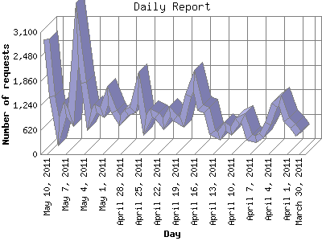

The Daily Report identifies the activity for each day within the reporting period. Remember that one page hit can result in several server requests as the images for each page are loaded.

| Day | Number of requests | Number of page requests | |
|---|---|---|---|
| 1. | March 30, 2011 | 516 | 0 |
| 2. | March 31, 2011 | 722 | 0 |
| 3. | April 1, 2011 | 868 | 0 |
| 4. | April 2, 2011 | 1,360 | 0 |
| 5. | April 3, 2011 | 1,248 | 0 |
| 6. | April 4, 2011 | 776 | 0 |
| 7. | April 5, 2011 | 473 | 0 |
| 8. | April 6, 2011 | 382 | 0 |
| 9. | April 7, 2011 | 427 | 2 |
| 10. | April 8, 2011 | 927 | 0 |
| 11. | April 9, 2011 | 830 | 0 |
| 12. | April 10, 2011 | 593 | 0 |
| 13. | April 11, 2011 | 707 | 0 |
| 14. | April 12, 2011 | 462 | 0 |
| 15. | April 13, 2011 | 547 | 0 |
| 16. | April 14, 2011 | 1,128 | 0 |
| 17. | April 15, 2011 | 1,185 | 0 |
| 18. | April 16, 2011 | 1,852 | 0 |
| 19. | April 17, 2011 | 1,483 | 0 |
| 20. | April 18, 2011 | 814 | 0 |
| 21. | April 19, 2011 | 914 | 0 |
| 22. | April 20, 2011 | 1,072 | 0 |
| 23. | April 21, 2011 | 781 | 0 |
| 24. | April 22, 2011 | 987 | 0 |
| 25. | April 23, 2011 | 1,031 | 0 |
| 26. | April 24, 2011 | 730 | 0 |
| 27. | April 25, 2011 | 1,691 | 1 |
| 28. | April 26, 2011 | 1,124 | 0 |
| 29. | April 27, 2011 | 1,056 | 0 |
| 30. | April 28, 2011 | 864 | 0 |
| 31. | April 29, 2011 | 1,081 | 0 |
| 32. | April 30, 2011 | 1,492 | 0 |
| 33. | May 1, 2011 | 1,061 | 0 |
| 34. | May 2, 2011 | 1,164 | 0 |
| 35. | May 3, 2011 | 855 | 0 |
| 36. | May 4, 2011 | 1,824 | 0 |
| 37. | May 5, 2011 | 3,057 | 2 |
| 38. | May 6, 2011 | 930 | 1 |
| 39. | May 7, 2011 | 1,143 | 1 |
| 40. | May 8, 2011 | 571 | 1 |
| 41. | May 9, 2011 | 1,461 | 0 |
| 42. | May 10, 2011 | 2,915 | 0 |
Most active day August 9, 2010 : 57 pages sent. 3,057 requests handled.
Daily average: 0 pages sent. 1,073 requests handled.
This report was generated on May 11, 2011 03:37.
Report time frame July 27, 2010 14:23 to May 10, 2011 23:34.
| Web statistics report produced by: analog 6.0 / Report Magic 2.21 |